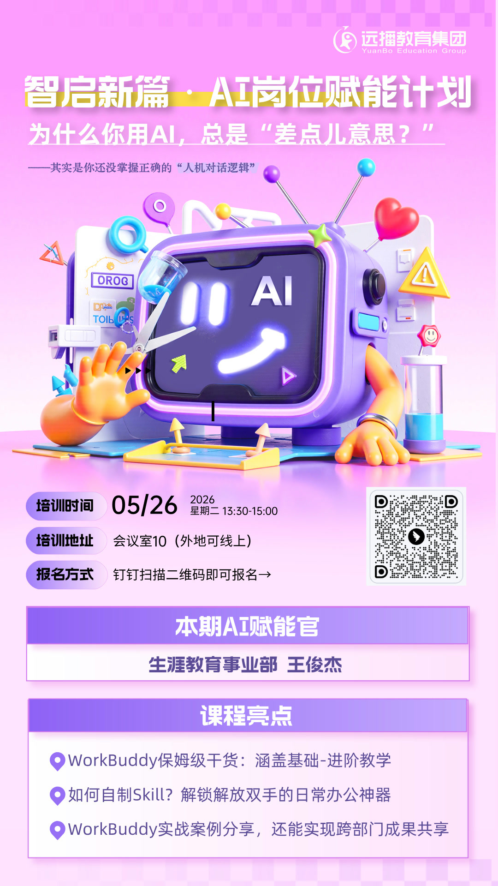

01 / 精选项目
每个项目，都解决一个真实问题。
从硬件设备到 AI 应用，从知识系统到工作方法——点开任意一个，可以看到完整的过程与结果。
02 / 能力
从定义问题，到交付验证。
四个方向的能力，指向同一件事：让方案落地成可以运行的结果。
A
产品定义
从真实场景出发拆解问题，判断什么值得做、先做什么、做到什么程度。
B
全栈交付
独立完成前端、后端、部署乃至硬件集成，让方案可以被真实使用验证。
C
AI 应用设计
模型接入、提示词策略、安全边界与交互体验的一体化设计。
D
知识沉淀
把经验整理成可检索的知识系统与可复用的工作流，形成长期资产。
03 / 公司级认可
工作成果，被正式看见。
两项经过组织正式认可的成果：一次公司级评选获奖，一个面向全员的 AI 赋能角色。


从方案到奖项，从个人到组织。
获奖方案里的方法后来沉淀成了可复用的工作流（见项目 04），赋能官的经历则把 AI 从个人提效推向团队日常——两件事是同一条线的两段。
-
AI Innovation
AI 创新方案入围奖 ·「百万加冕」评选 参评方案「X-Agent 智能提效矩阵」：面向真实工作场景的全链路 AI 赋能设计
-
AI Enablement
AI 岗位赋能官 ·「智启新篇」计划 面向各岗位的 AI 实操课程与推广，推动 AI 在组织层面落地使用
上图均为官方物料原件，可提供佐证。
04 / 关于
关于我
我相信"做出来"胜过"说起来"。无论是一台硬件设备，还是一套 AI 应用，我都习惯先做出能运行的版本，再在真实使用中打磨。这个作品集里的每个项目，都是这样完成的。
- 关注方向AI 应用 · 软硬件原型 · 知识系统
- 工作方式定义问题 → 快速原型 → 真实验证
- 当前状态持续更新项目与案例